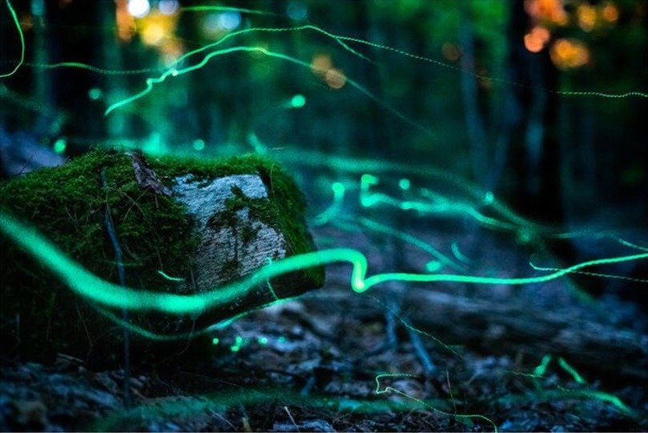

Phausis reticulata (Blue Ghost Firefly)
Season: late-May to mid-June
Time: 9:30 PM - 10:00 PM
The blue ghost firefly, Phausis reticulata, is a species known for its ethereal blue bioluminescent glow. Found in the southeastern United States, these fireflies are unique for their steady and enchanting light that hovers close to the ground.
Blue ghost males produce a bluish green light (the light is actually green, but appears blue to the human eye). Males fly low to the ground
in search for flightless females on the forest floor. Males may shine a continuous glow for up to 15 seconds at a time. Most active between
late May to mid-June. There are two distinct peaks of the mating season with the second peak being less abundant than the first peak. This species
prefers a variety of Appalachian forest types ranging from moist and dry forests, along water and on high dry ridges. A tiny to small firefly measuring 0.2-0.4 inches long.